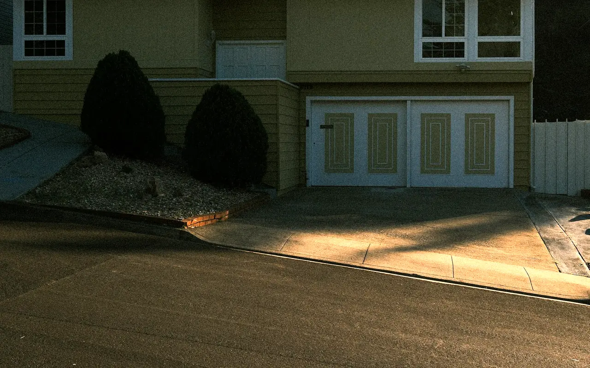

Hewlett NY · 11557 · Nassau County
Garage Door Repair Hewlett, NY
Same-day garage door repair throughout Hewlett NY 11557. From the colonial and cape homes near Peninsula Boulevard to the larger contemporary properties on the quieter residential streets — we arrive fast, diagnose accurately, and fix it right with a free written estimate and a written warranty on every repair. Evenings and weekends always available.
- Same-Day Service
- Free Written Estimate
- Licensed & Insured
- Quiet Belt Drive Installs
Garage Door Service in Hewlett
Hewlett NY 11557 — What We Know About the Homes Here
Hewlett is one of the more established Five Towns communities, with a housing stock that ranges from the original postwar colonials and split-levels built in the late 1940s and 1950s to significantly larger contemporary and renovated homes on the quieter streets away from the train line. The mix matters when it comes to garage doors.
The older homes in Hewlett — particularly those with original or once-replaced garage systems — often have torsion springs that have been in service for 15 to 20 years. These springs are on borrowed time. The standard residential torsion spring is rated for roughly 10,000 cycles. In a household that uses the garage as the primary entrance and exits twice daily, that's about 3,500 cycles per year — meaning a spring installed when the last family bought the house in the early 2000s is likely at or past its design life.
The newer and renovated Hewlett homes present a different challenge. Heavier carriage house doors and contemporary door styles require precisely calibrated spring systems — a door that looks balanced may actually be working the opener motor harder than it should, shortening its lifespan. We test spring balance on every service call throughout Hewlett, regardless of the presenting problem.
Hewlett is also predominantly a community of attached garages — which means noise matters. A chain drive opener in a Hewlett garage that sits below a bedroom is audible inside the house at any hour. When we receive calls from Hewlett homeowners asking about quieter operation, the answer is almost always a LiftMaster belt drive installation — the difference is immediately apparent.
Hewlett Attached Garage Note
The majority of Hewlett homes have attached garages sharing a wall with the main living area. This makes noise more noticeable — both from the door hardware and from the opener drive mechanism. If your garage door grinds, scrapes, or the opener rattles the ceiling at 6am, we can address both in a single service call. Nylon roller upgrades and a LiftMaster belt drive installation are the two most effective noise reduction steps we take in Hewlett homes.
| Torsion Spring Replacement | $295 |
|---|---|
| Extension Spring Replacement | $145 |
| High-Cycle Spring Upgrade | $380 |
| Cable Replacement (both) | $125 |
| Nylon Roller Upgrade | $35/roller |
| Track Realignment | $175 |
| Opener Gear Kit | $130 |
| LiftMaster Belt Drive Install | Call |
| Safety Sensor Repair | $75–$150 |
| Annual Tune-Up | $99 |
| Written Estimate | FREE |
Starting prices. Belt drive installations are quoted individually for your garage in a free written estimate.
(516) 490-0931 — Same DayServices in Hewlett NY 11557
What We Repair & Install in Hewlett
Spring Repair
Torsion and extension spring replacement same day in Hewlett. Larger colonial and contemporary Hewlett homes often have heavier double doors requiring precise spring calibration. We carry springs in the full range of sizes and cycle ratings, including high-cycle upgrades for primary-entrance attached garages.
Noise Reduction Service
Hewlett's attached garages make door noise a genuine quality-of-life issue. Nylon roller upgrades eliminate grinding and scraping. LiftMaster belt drive opener installation replaces chain rattle with near-silent operation. Both services are completed same day and the difference is immediate and dramatic.
Opener Service
Same-day opener repair and new LiftMaster belt drive installation throughout Hewlett. Battery backup included on new installations — important for Hewlett homes during nor'easter and summer storm outages. MyQ smart connectivity standard on all new LiftMaster installations for smartphone control from anywhere.
Cable & Track Repair
Cable replacement and track realignment same day in Hewlett. A frayed cable or bent track that's left unaddressed eventually causes the door to come off track — a more expensive and disruptive repair. We identify these issues during every service call and address them before they become emergencies.
New Door Installation
New door installation throughout Hewlett with free in-home estimate. Carriage house style in steel or composite overlay is the most requested for Hewlett colonials — particularly with decorative hardware that matches the home's exterior. Triple-layer insulated doors recommended for all Hewlett attached garage applications.
Annual Tune-Up
Annual 22-point inspection and service for Hewlett homes. Full lubrication, hardware tightening, auto-reverse safety test, sensor alignment, and written condition report. Fall is the best time for Hewlett homeowners — the door is about to face its hardest months, and pre-winter service prevents January emergency calls.
Hewlett Homeowner Guide
Garage Door Care for Hewlett's Attached Garages
When the garage is also the front door, the door works harder, and you hear every problem inside the house.
Do the Spring Math
A standard torsion spring is rated for roughly 10,000 cycles. Two trips a day through the garage adds up to about 3,500 cycles a year. If your springs were installed around the time the house last changed hands, they may already be past their design life. If you use the garage as your main entrance, ask about a high-cycle spring upgrade the next time springs are replaced.
Book Service in the Fall
Cold weather is hard on worn springs, cables, and stiff lubricant. A fall tune-up gets the door lubricated, the hardware tightened, and the auto-reverse and sensors tested before winter, which prevents many of the January emergency calls.
Plan for Storm Outages
Nor'easters and summer storms can knock out power while your car is inside. An opener with battery backup keeps the door working. It also helps to know where your opener's manual release is before you need it.
Hewlett Garage Door FAQ
Questions from Hewlett Homeowners
Straight answers to what Hewlett NY 11557 homeowners ask us most.
Who repairs garage doors in Hewlett NY?
Five Towns Garage Door provides same-day repair throughout Hewlett NY 11557. Call (516) 490-0931 — we typically arrive within 2–4 hours, call 30 minutes ahead, and provide a free written estimate before any work begins. Evenings, weekends, and holidays included.
What is the most common garage door problem in Hewlett NY?
In Hewlett, torsion spring failure is the most common emergency call — particularly in the larger colonial and contemporary homes with heavier double garage doors. A broken torsion spring typically announces itself with a loud bang. Do not operate the door until the spring is replaced. Call (516) 490-0931 for same-day service.
My Hewlett garage door spring broke — what do I do?
Stop immediately — do not operate the door or the opener. A broken torsion spring makes the door extremely heavy and unpredictable. The loud bang you likely heard was the spring releasing under tension. Call (516) 490-0931 for same-day spring repair throughout Hewlett NY 11557. We carry springs in all sizes on every truck and replace them the same day.
How much does garage door repair cost in Hewlett NY?
Extension spring repair starts from $145. Torsion spring replacement starts from $295. Cable replacement from $125. Free written estimate before any work begins. Call (516) 490-0931.
Why is my garage door so loud in my Hewlett home?
In Hewlett's attached garages, noise travels easily into the main living areas — and bedrooms may be above or adjacent to the garage. The two most common sources are worn metal rollers grinding in the tracks and a chain drive opener rattling overhead. Both are solved in a single service call: nylon roller upgrades and a LiftMaster belt drive opener installation, which is significantly quieter than chain drive. The difference is immediate. Call (516) 490-0931.
How much does a new garage door opener cost in Hewlett NY?
A new LiftMaster belt drive opener installed in a Hewlett home — including battery backup and MyQ smart connectivity — is quoted individually based on your specific garage. We provide a free written estimate with no obligation. For a same-day gear replacement on an existing opener, the repair starts from $130. Call (516) 490-0931.
Do you install insulated garage doors in Hewlett NY?
Yes — we install triple-layer insulated steel doors throughout Hewlett with R-12 polyurethane foam insulation. For Hewlett's attached garages, where the door shares a wall with the kitchen or living area, an insulated door reduces heat transfer, improves the temperature of adjacent rooms, and is noticeably quieter than a single-layer door. Free in-home estimate. Call (516) 490-0931.
Also Serving
Other Five Towns We Service
Google Reviews
What Customers Say
4.7 out of 5 stars from 15 Google reviews (as of September 2026). Reviews are quoted as written.
The technician did a great job to fix my garage door ! I appreciate his recommendation to replace the one coil and to replace the cable too. he was effcient and fast, and polite. I was hesitant at first because of the additional cost, but he spoke to me safert issues are first! Thank you for a job well done !
I live in Oceanside, and I was in the market for a new garage door. I shopped around and came across Five Towns Garage Doors. Not only did they give me a good deal, but they were prompt, professional and extremely helpful. They showed up when they said they would and did a great job. If anyone is looking for a garage door, do not hesitate, call Five Towns Garage Doors!
The repair guy came on time and he removed my old damaged garage door and replaced it with the new door quickly. He showed me what was different from the new garage doors for sale and the old door and explained why the parts were better than my old one. Highly recommended.
Garage Door Repair Hewlett NY 11557
Same-day service · Free written estimate · Written warranty · Quiet belt drive installations · Evenings & weekends